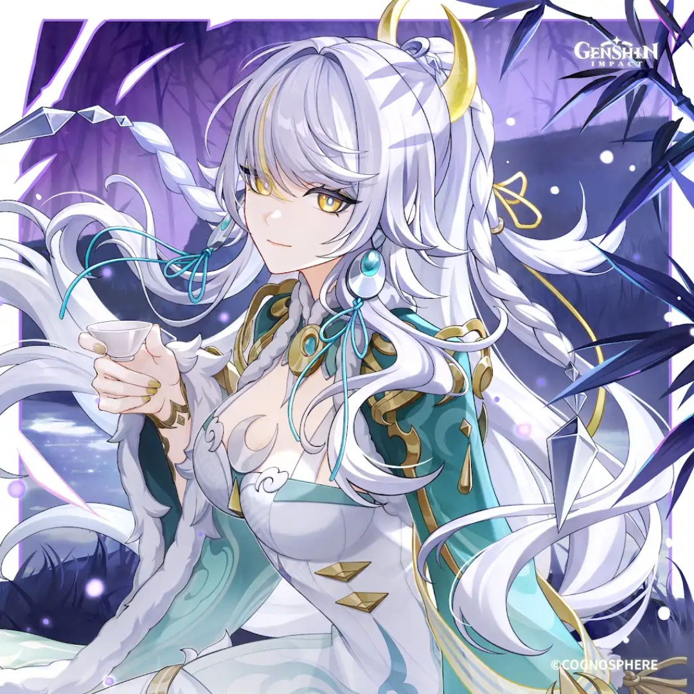

SANDS
DEF%
GOBLET
DEF% (No Geo%)
CIRCLET
CRIT Rate / DMG

With the addition of Linnea into the Geo roster, Zibai's DPS has skyrocketed, establishing the definitive new ceiling for Main DPS carries[span_0](start_span)[span_0](end_span). Even without Linnea, Zibai surpasses the damage output of most meta teams while maintaining an exceptionally straightforward and comfortable rotation, free from the strict mechanical demands of units like Nefer[span_1](start_span)[span_1](end_span).
Elemental Skill (Heaven and Earth Made Manifest) is the highest priority as it governs the entire frontloaded damage of Spirit Steed's Stride[span_3](start_span)[span_3](end_span). Elemental Burst (Tri-Sphere Eminence) follows for supplementary rotation damage[span_4](start_span)[span_4](end_span). Normal Attack talent levels do not contribute meaningfully to her damage[span_5](start_span)[span_5](end_span).
| Stat Metric | Target Threshold | Justification |
|---|---|---|
| DEF | 2,500+ | Scales 100% of her offensive motion values; ATK yields near-zero value[span_6](start_span)[span_6](end_span). |
| CRIT Rate | 40% ~ 50% | Unbuffed base; reaches 75%+ with 4pc Night of the Sky's Unveiling[span_7](start_span)[span_7](end_span). |
| CRIT DMG | 175%+ | Balances her ascension CRIT stat to maintain an optimal 1:2 ratio[span_8](start_span)[span_8](end_span). |
| Elemental Mastery | 100 ~ 200 | Directly augments personal Lunar-Crystallize reaction damage multipliers[span_9](start_span)[span_9](end_span). |
| Energy Recharge | 110% ~ 130% | Optional substat; allows casting Burst comfortably every other rotation[span_10](start_span)[span_10](end_span). |


Substat Priority: CRIT Rate > CRIT DMG > DEF% > Elemental Mastery > Energy Recharge[span_13](start_span)[span_13](end_span)
 Zibai
Main DPS
Zibai
Main DPS
 Columbina
Lunar Sub-DPS
Columbina
Lunar Sub-DPS
 Linnea
Linnea
 Aino
Aino
 Gorou
Gorou
 Illuga
Illuga
Columbina & Linnea provide secondary damage and massive Lunar-Crystallize amplification[span_20](start_span)[span_20](end_span). Gorou & Illuga provide flat DEF and Geo CRIT buffs to max out Zibai's multipliers[span_21](start_span)[span_21](end_span).
Zibai
Main DPS
Columbina
Moonsign Core
 Ineffa
Lunar-Charged
Illuga
Gorou
Ineffa
Lunar-Charged
Illuga
Gorou
Damage is distributed evenly between Zibai's high-scaling Lunar-Crystallize strikes and Ineffa's off-field Lunar-Charged discharge loops[span_22](start_span)[span_22](end_span).
Zibai
Main DPS
Aino
 Jahoda
Jahoda
 Xingqiu
Xingqiu
 Candace
Gorou
Candace
Gorou
A F2P-friendly team that still fulfills the Hydro and Geo requirements to trigger Ascendant Gleam and continuous Lunar-Crystallize reactions[span_23](start_span)[span_23](end_span).
| Tier | Name | Rating | Combat Mechanics & Pull Value |
|---|---|---|---|
| C1 | Burst Forth With Vigor, But Enter in Silence | ★★★☆ | Instantly gains 100 Phase Shift Radiance on Skill cast; increases Spirit Steed's Stride max casts to 5 times (up from 4), and buffs the 1st cast's 2nd-hit Lunar-Crystallize DMG by +220%[span_24](start_span)[span_24](end_span). |
| C2 | At Birth Are Souls Born, and in Death Leave But Husks | ★★★ (MUST SPIKE) | All party members deal +30% Lunar-Crystallize DMG[span_25](start_span)[span_25](end_span). The 2nd hit of Spirit Steed's Stride is further increased by an incredible +550% of Zibai's DEF[span_26](start_span)[span_26](end_span). Best constellation in kit[span_27](start_span)[span_27](end_span). |
| C3 | Free From Constraints and Worldly Ties | ★★☆☆ | Increases Elemental Skill (Heaven and Earth Made Manifest) Level by 3[span_28](start_span)[span_28](end_span). |
| C4 | The Spirit Passes, Then Form Follows | ★★☆ | Normal Attack animations do not reset during Skill; Spirit Steed's Stride empowers the next 4th Normal Attack to deal 250% of its damage as Lunar-Crystallize DMG[span_29](start_span)[span_29](end_span). |
| C5 | Perceive the Worthless and Debate It Not | ★★☆☆ | Increases Elemental Burst (Tri-Sphere Eminence) Level by 3[span_30](start_span)[span_30](end_span). |
| C6 | The World, A Journey in Passing | ★★★★ (WHALE) | Increases Phase Shift Radiance gain rate by 50%[span_31](start_span)[span_31](end_span). Spirit Steed's Stride consumes all Radiance above 70, elevating skill and Lunar-Crystallize reaction DMG by +1.6% per point consumed[span_32](start_span)[span_32](end_span). |
Zibai establishes a new pinnacle for frontloaded damage in Version Luna IV. Her massive DEF scaling, seamless compatibility with Moonsign supports, and high-frequency Spirit Steed's Stride strikes make her an essential pickup for Geo reaction teamcrafting[span_40](start_span)[span_40](end_span).